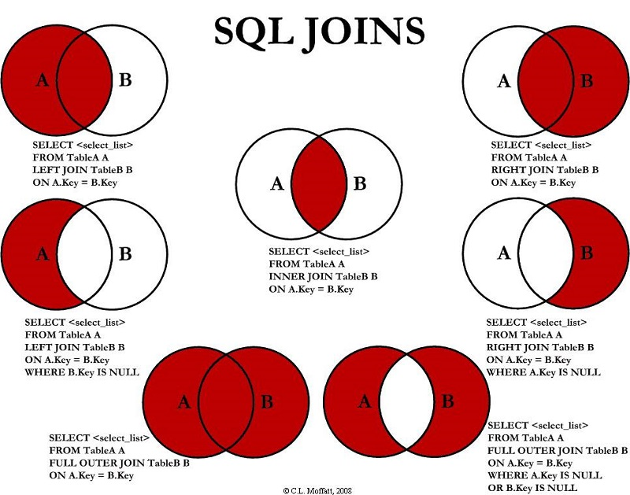

Clase 42:
Relaciones entre Tablas y Llaves Foráneas en SQL
🎯 Estructura y Prácticas de esta Clase:
- 🦾 Práctica 1: Relational Database Schema & Foreign Keys
- 💻 Proyecto Final: Relational Schemas & Foreign Keys
📐 Módulo 1: Modelado Relacional y Normalización
Entidades • PK/FK • Tablas PivotePasar de una tabla plana a un esquema relacional consiste en dividir datos caóticos en entidades atómicas interconectadas mediante llaves primarias (PK, identificador único) y foráneas (FK, apuntadores a otras tablas). En relaciones muchos a muchos (N:M), se requiere una tabla pivote intermedia para evitar duplicaciones masivas e inconsistencias.
- Entidades:
users(PKuser_id),songs(PKsong_id),playlists(PKplaylist_id). - Relación N:M: Una canción está en muchas playlists y una playlist tiene muchas canciones.
- Tabla intermedia:
playlist_songscontiene las llaves foráneas (playlist_idFK,song_idFK).
Imagina guardar tu música escribiendo en una sola libreta el nombre de la canción, el artista, su biografía, el álbum y el año en cada renglón. Si la banda cambia de nombre, tendrías que borrar y reescribir mil páginas. Es mejor tener una cajita para Artistas, una cajita para Canciones con una etiqueta adhesiva (ID), y una hoja de Playlists donde solo anotas los códigos de las canciones.
📊 Mapa Visual Completo de SQL JOINs (Diagramas de Venn)
Guía Gráfica • Referencia Rápida
⚡ Módulo 2A: INNER JOIN (Coincidencias Exactas)
INNER JOIN • Intersección Exacta
INNER JOIN combina únicamente las filas de dos o más tablas que cumplen la condición de cruce en ambas partes (intersección exacta). Los registros de cualquiera de las tablas que no tengan coincidencia correspondiente son completamente excluidos del resultado.
Piensa en dos filas de personas: los que tienen una entrada de concierto y los que tienen un asiento numerado reservado. El INNER JOIN actúa como el guardia del portón VIP: solo deja pasar a quienes tienen tanto la entrada como su asiento reservado asignado. Si falta alguno de los dos, se queda fuera.
-- Obtener artistas y sus canciones (coincidencias en ambas tablas)
SELECT
a.name AS artist_name,
s.title AS song_title,
s.genre,
s.release_year
FROM artists a
INNER JOIN track_artists ta ON a.id = ta.artist_id
INNER JOIN songs s ON ta.song_id = s.id
ORDER BY a.name, s.title;🔗 Módulo 2B: LEFT JOIN (Preservar Tabla Izquierda)
LEFT JOIN • Filas Izquierdas + NULL
LEFT JOIN mantiene todas las filas de la tabla izquierda, independientemente de si tienen o no coincidencia en la tabla derecha. Si no hay coincidencia en la tabla derecha, las columnas de la derecha se completan con NULL.
Imagina un pase de lista escolar donde la tabla izquierda es la lista oficial de todos los alumnos y la derecha es la asistencia del día. Con un LEFT JOIN, nombras a todos los alumnos de la lista oficial sin excepción; si alguien no asistió, junto a su nombre la maestra simplemente anota un espacio en blanco (NULL).
-- Listar TODAS las canciones y sus artistas (con NULL si no tienen)
SELECT
s.id AS song_id,
s.title AS song_title,
a.name AS artist_name
FROM songs s
LEFT JOIN track_artists ta ON s.id = ta.song_id
LEFT JOIN artists a ON ta.artist_id = a.id
ORDER BY s.id;🔍 Módulo 2C: LEFT OUTER JOIN & Detección de Ausencias (`IS NULL`)
LEFT OUTER JOIN • Detección de Huérfanos
LEFT OUTER JOIN combinado con WHERE ... IS NULL filtra únicamente los registros de la tabla izquierda que NO tienen ninguna coincidencia en la tabla derecha. Es la técnica clave en SQL para encontrar registros huérfanos, ausencias o elementos incompletos.
Le pides al guardia del concierto: "Muéstrame únicamente a las personas que entraron pero NUNCA recibieron un asiento asignado". El guardia busca entre todas las entradas de la izquierda y descarta a los que sí se sentaron, quedándose solo con quienes quedaron flotando sin asiento (IS NULL).
-- Identificar canciones que NO tienen artistas asignados (LEFT OUTER JOIN)
SELECT
s.id AS song_id,
s.title,
s.genre,
s.release_year
FROM songs s
LEFT OUTER JOIN track_artists ta ON s.id = ta.song_id
WHERE ta.song_id IS NULL;📊 Módulo 3A: Agrupación GROUP BY & Filtrado HAVING
GROUP BY • HAVING • Categorización
GROUP BY condensa múltiples filas que comparten valores en una sola fila resumen por categoría. HAVING filtra esos grupos calculados (a diferencia de WHERE, que filtra filas individuales antes de agrupar).
Tienes una bolsa llena de caramelos de distintos colores. GROUP BY sabor los separa en montoncitos por color. HAVING COUNT(*) > 10 le dice a tu amigo: "Solo muéstrame los montones gigantes que tengan más de 10 caramelos".
-- Artistas con más de 1 participación en canciones desde 2020
SELECT
a.id AS artist_id,
a.name AS artist_name,
COUNT(s.id) AS total_tracks
FROM artists a
INNER JOIN track_artists ta ON a.id = ta.artist_id
INNER JOIN songs s ON ta.song_id = s.id
WHERE s.release_year >= 2020
GROUP BY a.id, a.name
HAVING COUNT(s.id) > 1
ORDER BY total_tracks DESC;🔢 Módulo 3B: Conteo de Registros (COUNT())
COUNT(*) • COUNT(columna) • COUNT(DISTINCT)
COUNT() cuenta el número total de filas o valores no nulos en un grupo. COUNT(*) cuenta todas las filas del grupo, mientras que COUNT(columna) ignora valores NULL.
Es como pasar lista en la entrada del concierto presionando un contador manual cada vez que entra alguien. No importa el precio de su entrada ni su canción favorita; cada persona que cruza suma +1.
-- Contar total de canciones y roles distintos por artista
SELECT
a.name AS artist_name,
COUNT(s.id) AS total_songs,
COUNT(DISTINCT ta.role) AS unique_roles
FROM artists a
INNER JOIN track_artists ta ON a.id = ta.artist_id
INNER JOIN songs s ON ta.song_id = s.id
GROUP BY a.id, a.name
ORDER BY total_songs DESC;💰 Módulo 3C: Acumulación Total (SUM())
SUM() • Acumulación • Totales Financieros
SUM() calcula la suma total de los valores de una columna numérica dentro de un grupo de filas. Los valores NULL son ignorados automáticamente en la suma.
Es como meter las monedas de la alcancía en una máquina contadora. La máquina no cuenta cuántas monedas hay, sino que suma el valor en dinero de cada una para decirte el total acumulado.
-- Sumar reproducciones e ingresos estimados acumulados
SELECT
a.name AS artist_name,
SUM(s.plays) AS total_plays,
ROUND(SUM(s.price * ta.royalty_split), 2) AS total_royalties
FROM artists a
INNER JOIN track_artists ta ON a.id = ta.artist_id
INNER JOIN songs s ON ta.song_id = s.id
GROUP BY a.id, a.name
ORDER BY total_royalties DESC;📈 Módulo 3D: Promedio Ponderado (AVG())
AVG() • Promedio • Media Aritmética
AVG() calcula el valor promedio aritmético de una columna numérica en un grupo (Suma / Cantidad). Omite automáticamente los valores NULL en el denominador.
Imagina calcular el promedio de notas de la clase. Sumas todos los exámenes entregados y lo divides entre la cantidad de alumnos que rindieron la prueba. Si alguien no se presentó (NULL), no entra en la división para no bajar la media de forma errónea.
-- Precio y duración promedio por canción de cada artista
SELECT
a.name AS artist_name,
ROUND(AVG(s.price), 2) AS avg_track_price,
ROUND(AVG(s.duration_seconds), 0) AS avg_duration_sec
FROM artists a
INNER JOIN track_artists ta ON a.id = ta.artist_id
INNER JOIN songs s ON ta.song_id = s.id
GROUP BY a.id, a.name
ORDER BY avg_track_price DESC;💰 Módulo 4: Lógica de Negocio y Métricas en SQL
KPIs • Filtros Booleanos • Payout Calculado
Extracción de KPIs y reglas de negocio combinando datos entre tablas mediante multiplicaciones, sumas ponderadas, filtros booleanos compuestos (AND, OR) y ordenamientos (ORDER BY ... DESC).
Es como la caja registradora de una tienda al final del día. No solo miras la lista de compras, sino que calculas: cantidad de reproducciones por tarifa por segundo, filtras solo a los usuarios con suscripción activa y ordenas la lista para que el gerente vea arriba al artista que generó más dinero.
-- Ingresos estimados por artista como 'Main Artist' según split
SELECT
a.name AS artist_name,
a.country,
COUNT(s.id) AS total_main_tracks,
ROUND(SUM(s.price * ta.royalty_split), 2) AS estimated_earnings
FROM artists a
INNER JOIN track_artists ta ON a.id = ta.artist_id
INNER JOIN songs s ON ta.song_id = s.id
WHERE ta.role = 'Main Artist'
GROUP BY a.id, a.name, a.country
ORDER BY estimated_earnings DESC;🛠️ Módulo 5: Herramientas y Entorno de Trabajo
PostgreSQL • Supabase • DDL/DML • Reportes MD- PostgreSQL / Supabase: Motor relacional y panel interactivo para ejecutar scripts DDL (creación de tablas/esquemas) y DML (consultas y manipulación), interpretando errores de tipos o FK.
- Documentación en Markdown (.md): Exportar resultados tabulares y diagnósticos a reportes estructurados legibles para el equipo.
| Artista | Total Reproducciones | Ingresos ($) | |---|---|---| | Daft Punk | 1,500,000 | 4,500.00 |
Supabase es como el laboratorio de cocina con hornos de precisión (PostgreSQL) donde mezclas los ingredientes según la receta (.sql) y la consola te grita exactamente qué ingrediente faltó si te equivocas. El archivo Markdown es la carta del menú final donde presentas los platos limpios y explicados para que los comensales entiendan el resultado.
🔗 Relaciones entre Tablas: 1:N, N:M & Tablas Intermedias
Normalización • Integridad ReferencialUn registro de la Tabla A se relaciona con múltiples registros de la Tabla B (ej. Un Profesor imparte N Cursos). La llave foránea se coloca en la tabla 'Muchos'.
Múltiples registros de A se relacionan con múltiples de B (ej. N Estudiantes inscritos en M Cursos). Se resuelve mediante una Tabla Intermedia (Pivot Table).
💻 Definición de Foreign Keys & Tablas Intermedias
-- 1. Relación 1:N con Foreign Key
CREATE TABLE courses (
id SERIAL PRIMARY KEY,
title VARCHAR(150) NOT NULL,
teacher_id INT REFERENCES teachers(id) ON DELETE CASCADE
);
-- 2. Tabla Pivot (N:M): Estudiantes y Cursos
CREATE TABLE enrollments (
student_id INT REFERENCES students(id) ON DELETE CASCADE,
course_id INT REFERENCES courses(id) ON DELETE CASCADE,
PRIMARY KEY (student_id, course_id)
);Establece el vínculo estricto contra la `PRIMARY KEY` de la tabla padre impidiendo datos huérfanos.
En `enrollments`, la combinación `(student_id, course_id)` evita que un estudiante se inscriba dos veces en el mismo curso.
🔗 Foreign Keys (FK) & Integridad Referencial
Vinculación Estricta • Restricción Padre-HijoUna Foreign Key es una clave que apunta a la Primary Key de otra tabla. Garantiza que jamás existan registros "hijos" que hagan referencia a un registro "padre" inexistente o eliminado.
Es el ticket de equipaje del aeropuerto. La etiqueta de tu maleta en la bodega (FK) tiene impreso tu número de pasaje (PK). La maleta solo viaja en el avión si pertenece a un pasajero válido a bordo.
Declaración DDL de tablas (REFERENCES parent(id)) y relaciones en modelos ORM (`relationship()`).
🌐 Relaciones N:M & Tablas Pivot / Intermedias
Desacoplamiento • NormalizaciónComo SQL no permite listas de IDs dentro de una sola celda, una relación N:M se descompone en dos relaciones 1:N creando una tabla intermedia (ej. enrollments) que almacena pares de Foreign Keys (`student_id`, `course_id`).
En la escuela, un alumno no se inscribe escribiendo su nombre en la pared del aula. Se crea una hoja de matrícula (ficha) donde se escribe: ID Alumno + ID Asignatura. Esa hoja es la tabla intermedia.
SELECT s.name, c.title FROM enrollments e JOIN students s ON e.student_id = s.id JOIN courses c ON e.course_id = c.id;
📊 Reglas de Borrado en Cascada (`ON DELETE`)
Estrategia de Dominio SQL| Cláusula SQL | Mecanismo de Borrado | Caso de Uso Típico | Riesgo |
|---|---|---|---|
| 🟢 ON DELETE RESTRICT | Bloquea el borrado del padre si tiene registros hijos vinculados. | Clientes con facturas emitidas active. | Bajo (Seguro) |
| 🟡 ON DELETE SET NULL | Pone la Foreign Key en `NULL` al eliminar el registro padre. | Tutor asignado a estudiante. | Medio (Hijos sin padre) |
| 🔴 ON DELETE CASCADE | Elimina automáticamente el padre y TODOS sus registros hijos asociados. | Borrar curso borra sus matrículas. | ⚠️ Alto (Borrado masivo) |
💻 ¡Ahora a la Parte Práctica!
Demuestra lo aprendido aplicando los conceptos de esta clase en el proyecto práctico. Abre tu entorno de desarrollo y resolvamos los ejercicios interactivos.
EduTrack Related Tables
📐 Esquema Relacional de la BD EduTrack
├── id (PK) ├── id (PK) ├── student_id (PK, FK) ├── id (PK)
└── name ├── title ├── course_id (PK, FK) └── email
└── teacher_id (FK) └── enrolled_at
📁 Estructura del Proyecto `edutrack-data-audit-sql-related-tables`
edutrack-data-audit-sql-related-tables/
├── README.md <-- Guía del proyecto relacional
├── db/
│ ├── schema_v2.sql <-- Script DDL con FKs (teachers, courses, enrollments)
│ ├── queries_joins.sql <-- Consultas INNER JOIN, LEFT JOIN y agrupaciones
│ └── migrations/
└── reports/
└── relational_integrity_report.md <-- Análisis de integridad referencial⚠️ Gotchas Críticos en Esquemas Relacionales
Ejecutar SELECT * FROM A, B sin cláusula ON o WHERE multiplica todas las filas creando millones de combinaciones falsas e inundando la memoria.
Evitar que dos o más tablas se apunten mutuamente con FKs directas (como los 3 Spider-Man apuntándose), lo cual impide la inserción inicial o el borrado de registros.
🎯 Misión: Diseñar el Esquema Relacional EduTrack
Desafío Práctico • 1:N, N:M & JOINsConstruirás la estructura relacional multi-tabla de `EduTrack` uniendo profesores, cursos y estudiantes mediante Foreign Keys y tablas pivot.
Vincular `courses` con `teachers` mediante `FOREIGN KEY`.
Crear tabla intermedia con clave primaria compuesta.
Configurar `CASCADE` y `RESTRICT` según el dominio de datos.
Escribir consultas avanzadas con `INNER JOIN` y `GROUP BY`.